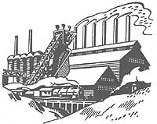

Sustaining Our Planet
Interview with Paul Hawken, founder of Smith and Hawken Tool catalog and author.
Mother Earth News staff
February/March 1994
IMITATING NATURE: "To survive the industrial system, we must create a way of manufacturing that mimics the way things are made in nature."
INTERVIEW
Author Paul Hawken, who remains optimistic about the survival of our planet, believes we are close to realizing an economic transformation as far-reaching as the industrial revolution.
Somehow along the way, interviews have fallen from the pages of Mother Earth News. But subscribers, who have never been shy about telling us what they'd like to see, have vocalized their request for their return. So we at MOTHER spent a good deal of time seeking out the right person to lead the way, and we finally found him. his name is Paul Hawken, and he is both the founder of Smith & Hawken Tool catalog and author of the recently released The Ecology of Commerce (HarperBusiness; 1993). his thoughts on sustaining the planet are as radically visionary as the practical solutions he offers, and we hope you are as impressed with his mind as we weere. Let us know if you enjoyed this piece and who you'd like to see interviewed in upcoming issues.-The Editors.
MOTHER: How has being a small business practitioner and cofounder of Smith & Hawken, a gardening-tool catalog, affected your outlook on what a sustainable society should look like?
PH: Well probably the most profound influence in terms of sustainability is that while I was involved in the company, we believed we could do things demonstrably better. Not only better than other companies, but better than ourselves. We believed we could keep improving the way we related to the environment and how we conducted ourselves.
One of the things that I realized-in retrospect, rather late-was that even though by conventional standards what we had done was far more progressive than 99.99 percent of all companies in the United States, if you took the sum of all of our environmental initiatives and transplanted them into every other company, we would still have a commercial system that's rapidly destroying the world. In fact, the pace of degradation far outstrips the capacity of the environment not only to recover but to sustain life on Earth.
MOTHER: So even though you started a company that emphasizes doing the right thing, you don't think the ultimate impact was as large as you might have thought?
PH: Exactly right. If you look at the environmental impact we had, you'll see that many things we did were good in terms of publicity. We were the first catalog company to go to recycled packing materials, and the first to ban Styrofoam. This made good copy and was picked up by newspapers and magazines. That looked great to us and to customers. But from a strict input/output model energy and resources in, waste out-we probably solved less than one percent of the problem.
I don't mean to gainsay what we and other companies were doing. It's important that business becomes aware and starts to change manufacturing and distribution. But nevertheless you can't become a sustainable enterprise under the existing systems. And I became very curious as to why that is so. Why is it that it's cheaper to destroy things than it is to sustain them? Why is it that we can destroy the world at a discount, but if we want to do the right thing we have to pay a premium?
MOTHER: Did you sell your business before you started writing your book, and would you consider yourself an entrepreneur now or a writer?
PH: I'm a writer. I wouldn't have felt comfortable running and operating a business while taking the stance about business that I have taken in the book. It would be conflicting. It's not that I didn't understand the dynamics of business, but I didn't want to write it from the point of view of owning, operating, or being in a business because the logical question everyone would ask is, "Well, what are you doing to help?"
MOTHER: Well it is true that you have made money selling your book. And the obvious criticism is that you're the beneficiary of the system you criticize.
PH: If I were saying, "Throw the bums out," it'd be hypocritical. Except I'm not saying throw the bums out. What I'm saying is that business is critical to our future. In fact, if we're going to restore the environment, it's going to be business that's going to do it. Furthermore, I'm not saying the problem is business' fault-it operates within a system that has a design flaw. It's the design that prohibits restoration of our system of commerce.
Also, I don't personally care how much money a person makes, as long as the way they're making it is making a better world for you and me and my children. What I am concerned about is that we have a situation now where people can and do make a lot of money in business. At a certain point their conscience is struck and they can decide to use some of that money to help restore the environment that was destroyed by the very business practices they benefited from.
MOTHER: One of the arguments in your book is that we should adjust prices so that they reflect the real costs of what the product is taking out of the whole system. You use the example of raising the costs of gasoline.
NATURE ILLETERACY: "Adults can recognize one thousand different logos of companies and products, but they cannot identify ten native plants around their houses, or even name five native birds."
What do you think would happen if one day people woke up and discovered that gasoline was $3 a gallon?
PH: What I'm saying is that the marketplace is wonderful at setting prices and terrible at recognizing costs-to future generations, ecosystems, habitats, and exploited workers. Those costs are not recognized in market prices. If tomorrow we woke up and all our prices reflected fully all externalized costs-costs of the actual damage industrialism causes-it would be a disaster because the economy would go into a tailspin. Real income would drop, industries would collapse, and layoffs would occur. You'd have a depression.
So what I said in my book is that we have to create a price-cost integration system that does not affect individuals' real income. We need a market where people are rewarded for internalizing costs, as opposed to externalizing them. If you have a market in which the rewards are for the lowest price, in effect, you're saying to the company: "Put as many costs as you can off to the future or some other people or some other third-world country. We'll reward you with a lot of sales and high stock prices and you will become rich:"
That's upside-down. If we're going to have a restorative economy, we should be rewarding producers, companies, farmers, and loggers who internalize their costs.
I propose getting rid of the existing tax system. Phase it out over a 20-year period. We now tax the things we supposedly encourage: jobs, income, profits, entrepreneurship, innovation. And why? Well, because the government needs money. I am suggesting we phase in green fees, or so called Pigovian taxes. For example, a gallon of gas costs us between $4.50 and $7 a gallon, but we don't pay for it at the pump. We pay for it in terms of air pollution, acid rain, toxins, etc. I propose that we do pay for it at the pump. If you have a system that places a high tax on fuel, then the consumer has a powerful incentive to save money. They will turn to more restorative, sustainable ways to run their cars because it will be cheaper.
Look at organic farming. It's cheaper to farm organically than with chemicals. Organic farmers internalize their costs. They're not putting pesticides into the waterways or aquifers. They are not destroying their topsoil or creatures. They are not using toxins. But they are punished when they go into the marketplace because they have to compete with producers who don't take care of their land or water or crops. So they have a price disadvantage.
When chemical farmers have to pay the true costs of chemical-intensive farming and the actual cost of carbon-based fuels used to rip up the soil, then the organic farmer will have the price advantage. Chemical farmers will want to learn how to farm organically, because it will be less expensive.
MOTHER: How did you arrive at 20 years as the amount of time needed to phase out the tax system?
PH: Over 20 years a business can look at their plans and say, "Wait a minute. We can see what's going to happen. We can take advantage of this and adapt. We can change. We're not going to be punished economically unless we don't change. We have enough time to do research and to develop the nature of our business from one type to another.
MOTHER: You have great cynicism about the unholy alliance, as you call it, between big government and big business.
PH: Very much so.
MOTHER: Some people-namely the people who have been making lots of money by not paying what they're being charged or what they should be charged-are not going to be very happy about your plan. And they are the ones running the place. How is this going to happen short of a populous revolution?
PH: One of the things I would tell the readers is that they should imagine a major reformation. If you and I wrote down everything that happened between 1985 to 1993, you'd list everything from the fall of the Berlin Wall to the South African vote to the Israeli-P.L .O. peace treaty-all things you'd never believe could happen seven years ago. I think that in the next 10 or 15 years we're going to see educational reform, political reform, and finally, local ecological reform. However, I don't think we'll see the reforms until we have some experience of what Lester Brown calls an environmental Pearl Harbor.
MOTHER: Do you think that's going to happen?
PH: I have no idea. All I know is that the rate of degradation in geological terms is so rapid as to be astonishing, and within our lifetime there will be feedback from the planet. Something is going to rise 'up from the noise to the level of being a signal.
MOTHER: We love what you say about literacy-that we're incredibly literate about sports events and operating our computers, but most of us don't know the names of the trees growing in our own backyard.
PH: This illiteracy is part of the reason that the existing signals from the environment are not being understood or are being misinterpreted. We're ecologically illiterate. Adults can recognize 1,000 different logos from companies and products, but cannot name ten native plants around their house or even five native birds. There has to be a shift back to a language of biology.
MOTHER: Your proposal to change linear systems to cyclical systems is a concept that we thinkMOTHER readers will feel familiar with. Could you explain your theory?
PH: Well, the reason that the present industrial system doesn't work is because it's linear and we live in a nature that is cyclical. A linear system takes, makes, and wastes. It takes things from the resource base, manufactures them into whatever people want to buy, and then, in the process, creates a lot of waste. Ultimately what is made is also thrown away and wasted.
If we're going to have an industrial system that's going to survive or we're going to survive the industrial system, then we need to create a means of manufacturing that mimics how things are made in nature. Nature works in cycles; it's a closed loop system. There's nothing on Earth that comes in or goes out except for sunshine and heat. And therefore, everything we've got is here already.
Now, what cyclicality means in terms of industrial terms is that we have to obey three principals: one is that in nature, there is no waste that doesn't equal food for other living systems. If we're going to change our industrial system, we'd have to change the word waste to food.
Second, nature is enormously efficient and runs on current solar income. The most efficient system in the world is the green plant cell, which is based on photosynthesis and maximizes the use of solar energy. We have an industrial system that's run on extracted reserves, and although every business person understands that they can't spend their capital and survive, this doesn't seem to carry over to the environment. So, we have to change our system so that it runs on current income.
And finally, you can't cycle waste or run on a current income unless you have diversity. This requires a diverse, decentralized, interconnected, highly differentiated commercial and social sector in order for the above principles to work.
MOTHER: You've explained how big businesses can help out with practical solutions. What can the individual do, other than not participate in big corporations?
PH: A lot of people tell me they want to quit their jobs and find a job that enables them to help the environment. They ask me what they should do. I tell them that I am most impressed with the people who stay where they are and do something about the environment. There is no environment out there. It is here, where we all are at any given place and moment in time.
It is difficult in some cases to work for a company that places environmental concerns out in left field. But really, the most important thing that people can do is to work with the institutions and professions and the people they know. That's where they're going to have the greatest effect.
However, the first thing people have to do is change themselves. One of the humbling experiences I had in writing this book is I assumed, having been in many national environmental organizations, that I was aware of the environmental problems we face. So I read two hundred books before I even started writing this book.
But I feel it's too late in the twentieth century to be right. What we have to do now is find solutions that work. We have to be able to bring together disparate elements in our society in a constructive process that moves us ahead in terms of our interrelationship with nature.
MOTHER: When you say "right," do you mean we have to accept a certain level of compromise?
PH: No. I'm saying "right" in the sense that you make other people wrong. It's understandable that at the beginning of the environmental movement, many were outraged at what books they read foretold of our future. And people who care went around and said, "Hey, wake up. Don't you see what you're doing? You're destroying the place." And people who had not thought they were destroying anything all of a sudden felt wrong, like they had been accused, that they were bad people.
I'm not saying that everybody's good, or that they aren't bad people. I am saying that it's not a way to get the job done. It's not a way that's going to build consensus in our communities, schools, institutions, or businesses.
MOTHER: We think it's very confusing and discouraging for individuals who have felt good about sorting their plastic and aluminum cans and are now being told that it makes little difference. What should individuals do to help and to what extent?
PH: Well, to say that recycling can is not enough doesn't mean that it isn't good. But what we have to be careful about is that we don't confuse superficial changes with real change.
Take a popular fast food chain, for example, which has made the switch from polystyrene clamshells to paper clamshells. Well, it's true that it's silly to keep food warm for two minutes with a container that lasts for a thousand years. But that's not the real problem. The real problem is that it's selling fried ruminants.
This chain's menu is both energy intensive and resource consumptive. Every pound of hamburger uses 2,500 gallons of water, some of which comes from the Ogallala aquifer, the largest underground body of fresh water in the world, which will be depleted in forty years. That's the problem-we shouldn't get confused and think that because of the switch to paper, it's okay to eat hamburgers every day.
MOTHER: You seem to have a bias toward smaller businesses both in your first book, Growing a Business (Simon & Schuster; 1988) and your current book. Would you agree with that statement?
PH: No, not necessarily, but I do think that small organizations are almost always more humane than large organizations, whether they're businesses, schools, churches, or anything else. Size itself is terribly dehumanizing.
MOTHER: Another problem that you discuss in your book is that big business currently seems to be immune to community today. What do you see as the ideal market right now, in regard to community?
PH: I feel that there should be a healthy proportion of products that are made, generated, and sold locally, as opposed to a large number being exported out and into the region. My guess is a healthy ratio is somewhere in the eighty/twenty range. Maybe it's seventy/thirty.
But I believe that in a healthy society and in a healthy economy, the majority of food, clothing, materials, services, and products is local. At the same time, I think it is important for regions to have an exchange of goods and products, because there are unique things to regions that are valuable to others. I think trade is very healthy. I just don't think it's healthy when everything you buy is from out of the area. Basically, you can live in the richest country in the world and still be in a third-world relationship to a transnational corporation.
MOTHER: And by third world, you mean you're importing finished products and exporting raw materials?
PH: Exactly, and that's happening throughout the United States. There is a great deal of frustration, even anger, in some cases because these people are subject to the same sort of boom-bust cycle as the third world has, in terms of commodity pricing and fluctuations in demand.
Having said that, I have to be honest and say that it's impossible to have healthy local economies as long as energy is so cheap, because cheap energy always leads to mass production, mass distribution, mass marketing, and mass media. I don't think we have any idea of how many aspects of our life result from cheap energy. It is what allows companies to dominate the market, in our country and across international borders.
I'd like to digress back to what an individual's responsibilities are. Despite the scale of modern business, everyone still has a say. I can tell you that businesses are sensitive, despite their apparent callousness.
When you send a complaint to a company, you usually get a letter of response from corporate communications. It's a form letter and you feel objectified like you don't exist. But the fact of the matter is that a small number of people do have an effect on a company if they're complaining or if their concerns are reasonably stated.
MOTHER: Yes. The most effective way to get a magazine to do something is just write to three or four editors, the publisher, and ad director, and somebody will talk to somebody else. It's amazing how efficient a few carbons are.
PH: Also, I think it's important to understand that for every person who really takes a stand there are a hundred other people who care, but are too busy or can't take a stand for whatever reason. And so I think it is important to focus on one company and to really make them attend to a problem. Join a network of other groups and activists and individuals. Because what happens is that if you can bring one company to its knees-whether it's Nestle with the baby-formula boycott or a company like Mitsubishi that's destroying the world's remaining primary forests-what happens is that other large companies become aware of what happens to them.
If I had one recommendation for your readers, it would be to join a campaign. Write or call companies that are harming some aspect of the environment and tell them why you're boycotting them. Or walk into one of their stores and say, "You know, I just want you to know that I cannot consider buying your product at this time because it is harmful to the environment."
MOTHER: How realistic is your proposal to repeal corporate charters, in effect, to punish exclusively directors and CEOs of companies that act in a way adverse to the general environment?
PH: Well, maybe you can pull back a little bit from the word "punish:' What you want to do is create a system that has accountability. That's a healthy system.
Originally when corporations were granted state charters, they were held accountable by the systems of that state in terms of how they acted, who the directors were, and what they did. The charters were all revocable. And people understood that in order for our society to be healthy, there had to be a balance of power between business and citizens. And what happened it's a long history, but I'll state it very briefly-was that after the Civil War and the corruption that ensued in both the public and private sectors, there was a real diminution of the power of these chartering laws. At the same time, corporations sued to get equal protection, and in a sense, gained a right to be perceived as individuals.
MOTHER: Without any liabilities individuals have?
PH: Yes, instead of being regulated by individuals, they took on our identity and we now see cigarette advertising aimed at teenage smokers protected by the first amendment. I think the movement to revise chartering laws is not going to happen tomorrow. I do think that it is time for people to recognize and even read their own state's chartering laws.
Being incorporated is a privilege in the same way that being a citizen is. And with citizenship comes rights and responsibilities. When a corporation violates those responsibilities, they should have to answer to some sort of charter board that has the power to revoke the privilege of incorporation.
MOTHER: I have one final question. To the readers of Mother Earth News, your vision may seem kind of pessimistic. Do you have anything to say about your outlook for the next couple of years?
PH: Yes. I'm not pessimistic at all. I do think you have to be realistic; otherwise any optimism-or for that matter, pessimism-you may have is basically ill informed. The reason I am optimistic is because I believe that we are on the verge of an economic transformation that is as big and great as was the industrial revolution. Only this time, in many ways, the values and the principles that underlie it will be inverted.
Imagine an economy that has eighty percent less materials but that has more jobs, more security, and more work. The future world that I'm talking about is a world that is far more compelling and interesting than the one we live in now.
Eight Ways to Sustain the Earth
Reduce absolute consumption of energy and natural resources in the North by 80% within the next half century. In material terms, this amounts to making things last twice as long with half the resources.
Provide secure, stable, and meaningful employment for people everywhere. Moving toward sustainability and not addressing job creation will exacerbate economic hardship and further degrade resources. Asking people to reduce consumption without increasing employment would only be destructive.
Be self-actuating as opposed to regulated or morally mandated. Some believe the rate at which we're losing life on earth calls for the imposition of higher "rights" than those constitutionally recognized in democracies. Even if we agree that we should put aside certain human liberties for a greater good, there is still a flaw in this argument. Government has a critical role to play, which must coincide with humans desire to flourish and prosper. But the government will eventually reject any tactic that interferes with these desires.
Honor market principles, No "plan" to reverse environmental degradation can be enacted if it requires a wholesale change in the dynamics of the market. We have a strong instinct to shop and buy products of comparable quality at the lowest price. We can't just ask people to pay more to save the planet. They won't do it in some cases-and can't in most.
8e more rewarding to ourselves than our present way of life. We need to invite people into a world that delivers the goods, not subtracts them; that intrigues without threatening; in which they can participate, enjoy, and create. Present-day limits need to become opportunities.
Exceed sustainability by restoring degraded habitats and ecosystems to their fullest biological capacity. The dirty secret in environmentalism is that sustainability is an insufficient objective. Habitats can endure over millennia, but it's practically impossible to calculate the sustainability of specific fisheries, tracts of land, and actual forests. We have also probably passed the point where present planetary resources can be relied on to support the population of the next 40 years. Any viable economic program must turn back the resource clock and devote itself actively to restoring deteriorating systems-restoration is far more compelling than the algebra of sustainability,
Rely on current income. Sustainable human communities should act like natural ones, living within a natural ebb and flow of energy from the sun and plants. This means redesigning all industrial, residential, and transportation systems so that everything we use springs easily from the earth and returns back to it.
Be fun and engaging; strive for aesthetic income. A sustainable society will only come about through the accumulated effects of daily acts of billions of eager participants. Good design can release humankind from its neurotic relationship to absurd acts of destruction. The urge to create beauty is an untapped power, and it exists in commerce as well as in society.
--Excerpted from The Ecology of Commerce. (HarperBusiness; 2993). Call 800/242-7737.
 |
|
 |
|
|
|
|